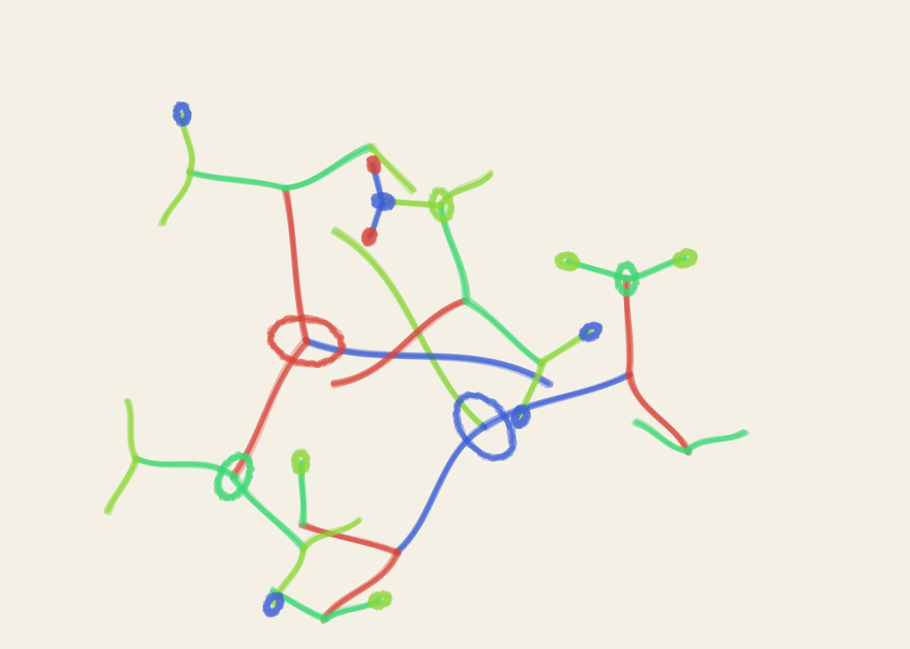

01
Growth Systems — Study 01
Growth Systems generative marker artwork using seed AA-20261016-01-55665, 87% golden-ratio adherence, felt pen and the golden palette.
- Seed
- AA-20261016-01-55665
- Series
- Growth Systems
- Format
- Landscape · 1400 × 1000
- φ adherence
- 87%
- Medium
- felt marker
- Palette
- golden